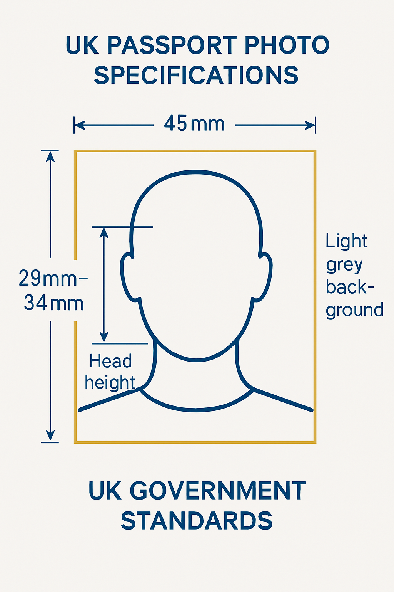

UK Passport Photos in Downtown Toronto
Need UK passport photos in Toronto? Passport Photo Toronto provides professional UK passport photos that strictly adhere to all British government requirements. Whether you're a UK citizen living in Toronto, a dual citizen, or applying for a UK visa, our expert photographers will ensure your photos meet all specifications.
UK Passport Photo Requirements
The UK government has specific requirements for passport photos that differ from Canadian standards. Our service ensures your photos will comply with all these requirements:

- 45mm x 35mm in size (standard UK passport photo size)
- Taken within the last month
- Clear, sharp and in focus
- Neutral facial expression with mouth closed
- Eyes open and clearly visible (no hair covering eyes)
- Plain light grey or cream background
- No glasses (unless you cannot remove them for medical reasons)
- No head coverings (except for religious purposes)
- No shadows on face or background
- Proper lighting with no red-eye or flash reflection
Why Choose Our UK Passport Photo Service?
There are many reasons why Toronto residents trust us for their UK passport photos:
- Guaranteed Acceptance: If your photos are rejected by the UK government for any technical reason, we'll retake them for free.
- Expert Knowledge: We stay up-to-date with all UK passport photo requirement changes.
- No Appointment Needed: Walk in during our business hours and have your photos taken immediately.
- Quick Service: Your photos will be ready in just minutes.
- Digital Options: We can provide digital copies for online applications.
- Convenient Downtown Location: We're located at 63 McCaul St, easily accessible from anywhere in Toronto.
- Affordable Pricing: Our UK passport photos are competitively priced at $24.99.
Digital UK Passport Photos
In addition to printed photos, we offer digital UK passport photos that are:
- Properly sized to meet the UK government's digital submission requirements
- Correctly formatted for online passport applications
- Delivered via email for your convenience
- Perfect for UK passport renewals through the online system
UK Passport Photos for All Ages
We provide UK passport photo services for everyone:
- Infants and Babies: We have special techniques to capture compliant photos of even the youngest children, which can be particularly challenging for UK passport photos.
- Children: Our photographers are patient and experienced with kids of all ages.
- Adults: Quick and efficient service for busy professionals.
- Seniors: We take extra care to ensure comfort and satisfaction.
The Process: How It Works
Getting your UK passport photos at our studio is simple:
- Visit our studio at 63 McCaul St in downtown Toronto (no appointment needed)
- Our photographer will take your photo against our professional backdrop
- We'll review the photo with you to ensure it meets all UK requirements
- We'll print your photos on high-quality photo paper in the exact 45mm x 35mm format
- Your photos will be ready in minutes, properly sized and ready for your UK passport application
- If requested, we'll also email you a digital copy for online applications
Visit Us Today for Your UK Passport Photos
No appointment is necessary! Simply visit our studio during business hours, and we'll have your UK passport photos ready in minutes. We're conveniently located in downtown Toronto at 63 McCaul St, just steps away from OCAD University and the Art Gallery of Ontario.